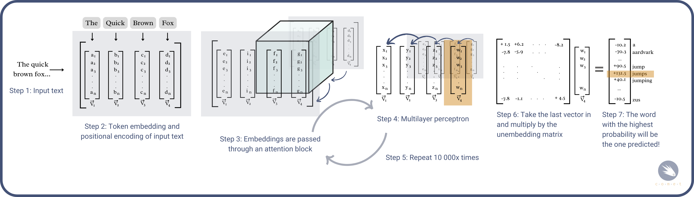
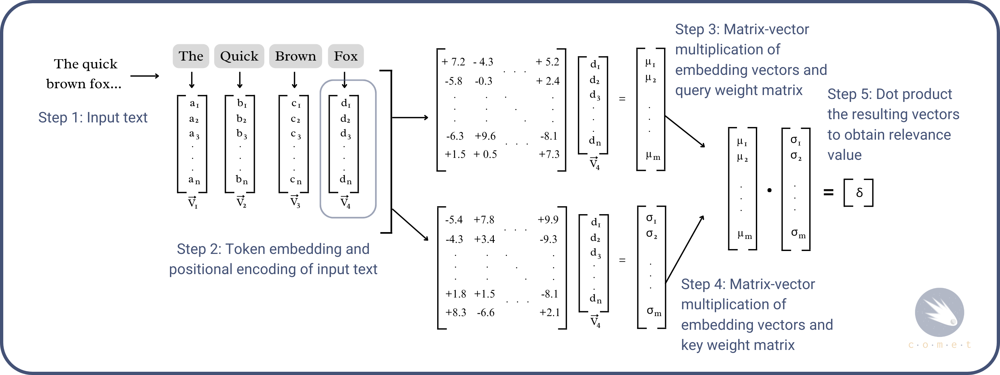

#input your answer here4.6 - Advanced - Fine-Tuning Large Language Models for Sentiment Analysis
python
fine-tuning
sentiment-analysis
LLMs
AI
An introduction to fine-tuning LLMs using BERT, in Python.
Sentiment analysis is a useful tool for gathering a high-level understanding of the emotions expressed in written text. For instance, a finance firm may wish to gather information about market sentiment pertaining to bitcoin. It would do so by first gathering a corpus of tweets and posts from various sources online, and analysing it by comparing posts to a special kind of dictionary, called a sentiment dictionary, which contains a list of words and their predetermined sentiment. This process is called lexicon-based sentiment analysis. If you’d like to learn more about lexicon-based sentiment analysis, you can consult this notebook.
The issue with lexicon-based sentiment analysis, is that especially in modern times, it can be inaccurate: Dictionary based sentiment analysis is context ignorant, meaning that it struggles with things such as sarcasm and irony, as well as mixed emotions \(^{[1]}\). Additionally, language is constantly changing: for instance, the term “bad” is traditionally associated with negative sentiment, but often holds a different, positive connotation on the internet.
For these reasons, this notebook outlines a novel method of sentiment analysis, which uses large language models (LLMs) to conduct sentiment analysis on a given dataset. In particular, this notebook outlines the process of fine-tuning an LLM for the explicit purpose of sentiment analysis.
0. Prerequisites
0.1 Prior Knowledge
A basic understanding of coding in Python.
A basic understanding of linear algebra is useful for the theory, but not required for running this notebook. ### 0.2 Hardware/Software requirements
This notebook requires access to NVIDIA GPU, with at least 12 gigabites of VRAM. Additionally, you will need at least 12 gigabites of RAM. If you are running on a mac, or your computer doesn’t meet the above requirements, consider running this notebook using google collab.
Warning: For the reason outlined above, this notebook cannot be run on Sygyzy, which limits students to two gigabites of memory. See the installation instructions for installing locally on how to run this notebook directly on your computer.
- Conda/miniconda installed on your device.
- If not on Collab, either a local instance of jupyterlab, or an IDE.
1. Understanding LLMs and Fine-Tuning
This section gives a introductory, high-level overview of large language models and how they work.
1.1 What is a LLM?
In short, a Large language model (LLM) is any deep learning model that can comprehend and generate human text \(^{[2]}\). In other words, an LLM is a sophisticated artificial intelligence program designed to understand and generate text based on the input it receives. One such example that you may be familiar with is ChatGPT. This is one of many, many language models available for use on the internet. Other notable examples include LLama (Facebook), and Bard (Google). An LLM learns from vast amounts of text data to improve its ability to understand and respond effectively, similarly to a human.
LLMs are a subset of a wider class of models called natural language processing models (NLPs), computational models designed to understand and interpret human language in order to perform tasks such as text classification, transcription, translation, and more \(^{[3]}\). A Neural Network is a computational model that works similar to how the human brain functions. Neural networks consist of layers of interconnected nodes, called neurons, that process information (speech, text, images, etc). These networks are trained to learn patterns and relationships in data, making them capable of tasks like image and speech recognition, natural language processing (chatgpt), as well as Generative Adversarial Networks, which generate images from textual prompts \(^{[4]}\).
1.2 How does a LLM work?
Sure, giving ChatGPT a prompt and watching it produce an output is interesting, but have you ever wondered how it can do that? In this section, we introduce the basic mechanisms behind large language models powered by generative transformers (GPTs). What makes models such as ChatGPT, Gemini, and LLama so much better than older NLP models is the use of a transformer architecture (the “T” in ChatGPT), which allows them to understand prompts and generate human-like text. The transformer architecture is a type of neural network that is able to learn context and meaning of a given input text by tracking relationships within the input text \(^{[5]}\).
1) Vector embedding of input text: First, the model converts each word in the input sequence into a vector representation known as a token embedding. We won’t go into detail as to how this is done; for that, you can consult the notebook on vector embeddings here. Additionally, since transformers do not inherently understand the order of tokens, positional encodings are added, which allow the model to understand where each word is relative to other words in the input text.
2) Attention Mechanism: First outlined in the landmark research paper “Attention is all you need”\(^{[6]}\) by Google in 2017, the attention mechanism or attention block allows the model to focus in on different parts of the input text and calculate how much attention it should pay to every word by comparing it to each other word in the input text. The result is a weighted combination of words’ value vectors, reflecting their relevance. This allows the model to prioritize important words and capture meaningful relationships in the sequence, effectively understanding the context and meaning of a text \(^{[7]}\) \(^{[8]}\). For instance, in the phrase “The quick brown fox jumps over the lazy…”, the attention mechanism would allow the model to place more emphasis on the words “fox”, ’quick” and “brown”, and less emphasis on the word “the”.

3) Multi-layer perceptron/feed-forward network: The multi-layer perceptron, also called a feed-forward network, transforms complex representations of input data by processing it through layers of interconnected “neurons”. This transformation helps the network make predictions, classify data, or generate meaningful outputs, using a process called forward propagation. \(^{[9]}\). Essentially, it allows the model to map input data to desired outputs effectively. You can think of the feed-forward network as asking a series of questions to the each word in the input sequence \(^{[10]}\). For instance, returning to the previous example of “The quick brown fox jumps over the lazy…”, the word “fox” could be asked the question “are you a noun?” and it’s vector embedding would be updated accordingly.
This process is then repeated a number of times: the resulting vectors are parsed through the attention mechanism, and then back into the feed forward network. Each layer’s output becomes the input for the next layer, gradually refining the data. The final layer, which corresponds to the last feed-forward network, produces the network’s prediction. For text generation tasks, this would be take the form of a probability distribution \(^{[10]}\).
4) Unembedding matrix: The last step multiplies the very last vector in the result of the feed-forward network by a special matrix called the unembedding matrix. The result of this multiplication results in a new matrix, for which each entry corresponds to each word in the english language. The values within this vector correspond to the respective probabilities of each word being the correct “next” word \(^{[10]}\) \(^{[11]}\).
1.3 Weights, Weight Matrices, and Fine-tuning
Weights: Weights are parameters within a neural network that are learned during the training process. They determine the strength and direction of the connections in the network \(^{[12]}\). Intially, weights are set randomly; during training, the weights are adjusted to minimize the error between the predicted output and the actual output, by minimizing a loss function. This process is known as gradient descent \(^{[10]}\) \(^{[13]}\).
Weight matrices are structured collections of weights arranged in matrix form. They represent the connections between layers in a neural network. The operation of passing inputs through the network involves matrix multiplication: the input vector is multiplied by the weight matrix to produce the output vector for the next layer \(^{[14]}\).
In the attention mechanism, each word in the input sequence is transformed into three different vectors: the query vector (used to search for relevant information from other words in the sequence), the key vector (represents the words in the sequence and is used to match with query vectors), and the value vector (holds the actual information of the words in the sequence and is used to generate the output of the attention mechanism), using separate weight matrices \(^{[14]}\). For example, if the input is a sequence of words represented as vectors, the queries, keys, and values are computed as:
\[Q=W_{Q}(X), K=W_{K}(X), V=W_{V}(X)\]
where \(W_{Q}\), \(W_{K}\), and \(W_{V}\) are weight matrices \(^{[14]}\) \(^{[15]}\). These vectors are used to calculate attention scores, which determine how much focus each word should give to every other word in the sequence.

Fine-tuning is the process of updating the key, query and value matrices to reflect new data \(^{[16]}\). Because the weight matrices contain both the original, general weights and the new adjustments from the fine-tuning process, fine-tuning allows the model to retain the broad, general knowledge from the pre-training phase while specializing in the a new task, such as sentiment analysis, customer feedback, etc.
1.4 Bidirectional VS left-right encoding models
Model LLMs can be grouped into two categories: Those that have bidirectional encoders, and left-right encoders. Left-right encoder models are models that process text sequentially, at any given point in the encoded text sequence, the model can only use information from the current and previous tokens, not future tokens \(^{[17]}\). For instance, when processing the text “The quick brown fox jumps over the lazy dog”, a left-right encoder processing the word “fox” would only have access to the words “the”, “quick” and “brown” when assigning how much attention should be paid to the word “fox”.
Bidirectional encoder models, on the other hand, process the input sequence in both directions, from start to end and from end to start. This allows the model to take into account both the left and right context of each token simultaneously \(^{[18]}\). This makes bidirectional encoder models particularly strong at sentiment analysis tasks, as they are better able to capture the sentiment assigned to each given word \(^{[19]}\).
For this reason, if you wish to use large language models for sentiment analysis, it’s recommended you use bi-directional encoder models for both greater accuracy and faster training speeds.
Some popular models include:
- Finbert (For analyzing financial sentiment)
- RoBERTa
- BERT
- distilBERT (used in this notebook)
1.4 Self tests
1.4.1 Self-test 1
In the phrase “The quick brown fox jumps over the lazy…”, a left-right encoding model reading the word “fox” would have access to the words _____ when determining the word’s ____.
Assign your answer to an object called answer_1 as a string in the cell below. For instance, if I were to pick the non-existent option “Z”, I would enter answer_1 = "Z".
- “jumps”, “over”, “the”, and “lazy”. Relevance.
- “The”, “quick”, “brown”, “jumps”, “over”, “the”, and “lazy”. Vector embedding.
- “The”, “quick”, and “brown”, Vector embedding.
- “jumps”, “over”, “the”, and “lazy”. Vector embedding.
- “The”, “quick”, and “brown”, Relevance.
- “The”, “quick”, “brown”, “jumps”, “over”, “the”, and “lazy”. Relevance.
import hashlib
from hashlib import sha256
h=hashlib.new("SHA256")
h.update(answer_1.encode())
if str(h.hexdigest()) == "a9f51566bd6705f7ea6ad54bb9deb449f795582d6529a0e22207b8981233ec58":
print("correct! \U0001f600")
else: print("incorrect, recall the the difference between left-right and bidirectional encoder models.")correct = "C"
h=hashlib.new("SHA256")
h.update(correct.encode())
h.hexdigest()1.4.2 Self Test 2
Suppose an LLM was given the following text and tasked to perform sentiment analysis: “It’s a beautiful sunny day outside”. It’s first take would be to embed each word. Which of the following is a reasonable embedding for the word “sunny”?
- isjfk29ndlsavbm4_2u3n
- ” sun-ny ”
- <3820.2, 38573.6, 1826.2, 23.3, … 4958.3>
- 🌞
Assign your answer to an object called answer_2 as a string in the cell below. For instance, if I were to pick the non-existent option “Z”, I would enter answer_2 = "Z".
#input your answer hereimport hashlib
from hashlib import sha256
h=hashlib.new("SHA256")
h.update(answer_2.encode())
if str(h.hexdigest()) == '6b23c0d5f35d1b11f9b683f0b0a617355deb11277d91ae091d399c655b87940d':
print("correct! \U0001f600")
else: print("incorrect, recall that embeddings have both magnitude and direction.")2. Setting up
Before we begin, we’ll need to create a new python environment for our required libraries, as well as install CUDA.
2.1 Creating an envrionment
Skip this step if you are using Google Collab.
Let’s first create a python environment, using conda.
Make sure you have miniconda installed, and open up the miniconda prompt.
In the miniconda prompt, enter
conda create -n llm_finetuning jupyter. This will create a new environment called llm_finetuning, with jupyter installed.Next, activate the environment by typing
conda activate llm_finetuning.
2.2 Installing CUDA
We’ll now need to install CUDA. CUDA is a parallel computing platform that allows computers with NVIDIA GPUs to harness their GPUs for tasks other than graphics rendering (NVIDIA, 2024). This is essential for running LLMs, which require loading in massive amounts of data simultaneously. For this reason, if you do not have access to an NVIDIA GPU, you will not be able to run this notebook.
Head to CUDA toolkit 12.1 and follow the on-screen prompts to install it. Note that pytorch requires this specific version of CUDA. If you have a different version already installed, you may need to uninstall it using conda remove cuda or using the windows app installation menu.
2.3 Installing required libraries
We can now install the required libraries.
The first library we’ll need to install is pytorch: pytorch is an open-source deep learning framework for building deep learning models (NVIDIA, 2024). You can install pytorch using
conda install pytorch torchvision torchaudio pytorch-cuda=12.1 -c pytorch -c nvidia.Additionally, we’ll need to install the transformers library. The transformers library is an open-source framework for deep-learning models, which provides access to useful APIs and pre-trained models (Huggingface, 2024). At the same time, we will install the datasets, accelerate, peft, optimum and bitsandbytes libraries. We can install them using:
!pip install transformers datasets accelerate peft optimum bitsandbytesThe datasets library is a library that provides access to useful datasets for training LLMs. The other libraries are extensions of the transformers library that provide support for faster training and quantization.
- Lastly, we’ll install the huggingface login library, which will allow us to use gated models uploaded to huggingface, as well as upload our own fine-tuned model. You can install it using:
!pip install huggingface_hub- Finally, we’ll need to restart our kernel, so that it recognizes the installed libraries. if you are in VSCode, you can do so by pressing “restart” at the top of the screen. If you are in jupyterlab, you can do so by pressing the “restart the kernel” button at the top left of your screen.
2.4 Logging into huggingface
We’ll now log into huggingface directly in this notebook, which will allow us to use BERT, as well as upload our own fine-tuned model.
If you haven’t already, create an account at https://huggingface.co/join.
Once your account is created, navigate to
settings (located at the top right corner of your screen) > Access Tokens > +Create new token. Give your token a name, and select, under user permissions:
- Read access to contents of all repos under your personal namespace
- Read access to contents of all public gated repos you can access
- Write access to contents/settings of all repos under your personal namespace
Lastly, press create and copy your token. Save it somewhere, such as in a notepad.
- We can now log into huggingface, directly in this notebook. Run the following command, and input your token:
from huggingface_hub import login
login()2.5 Creating a huggingface model card
After we train our model, we’d like to be able to save it on huggingface and call it directly from there.
In Hugginface, navigate to the top-right corner of your screen and press the circular account icon.
Press
new modeland create a model card.Copy the model ID of the model card by pressing “copy model name to clipboard”.
3. Fine-tuning BERT on a given dataset
As our LLM example, we’ll use BERT. BERT is an open-source large language model created by Goggle, Specifically, we’ll be using distilBERT, a faster and smaller version of BERT created by the HuggingFace team \(^{[20]}\).
from datasets import load_dataset, DatasetDict
import torch
from transformers import AutoTokenizer, AutoModelForSequenceClassification, BitsAndBytesConfig, TrainingArguments, Trainer, EarlyStoppingCallback, DataCollatorWithPadding
from peft import prepare_model_for_kbit_training, LoraConfig, get_peft_model
import numpy as np
from typing import Dict, Any3.1 Loading in the IMDB dataset
We’ll fine-tune this model on the imdb dataset \(^{[21]}\), a dataset containing 100 thousand movie reviews and their sentiment: either negative or positive. For teaching purposes, we’ll use a sample of the full dataset, which contains 2000 reviews. 1000 will be used for training, and another 1000 will be used for predicting.
Our goal is to fine-tune a model by training it on a collection of movie reviews, such that is more accurately predicts the sentiment of movie reviews compared to the base model.
Let’s start by taking a look at the dataset:
from datasets import load_dataset
dataset = load_dataset('shawhin/imdb-truncated')Now that we’ve loaded in the dataset, let’s take a closer look at it:
datasetWe can see that the dataset contains 2 splits: One for training, and one for testing, each with 1000 rows. Let’s preview the hundredth row in the training set:
dataset['train'][100]We can see that it contains a movie review, as well as a corresponding label. A label of 0 corresponds to a negative review, and a label of 1 corresponds to a positive review.
3.2 Defining tokenizer and metrics functions
Let’s define some functions required for the LLM to process and evaluate our dataset.
3.2.1 Tokenizer function
The first function is the tokenizer function, designed to tokenize our data, ie, convert each movie review into tokens.
Inputs:
- examples: A dictionary containing the text data that needs to be tokenized.
- tokenizer: An instance of AutoTokenizer from the Huggingface library. This tokenizer is used to convert text into tokens that can be - processed by a transformer model.
Operation: The tokenizer is applied to the text data in examples[‘text’]. The text is tokenized with the following parameters:
- padding=“max_length”: Adjusts the length of the text data to a uniform size by adding extra tokens. Pads the sequences to the maximum length specified by max_length (512 tokens).
- truncation=True: Truncates the sequences to ensure they are no longer than max_length.
- max_length=512: Sets the maximum length of the tokenized sequences to 512 tokens.
Output:
- A dictionary containing the tokenized text, ready for input into a transformer model.
def tokenize_function(examples: Dict[str, Any], tokenizer: AutoTokenizer) -> Dict[str, Any]:
return tokenizer(examples['text'], padding="max_length", truncation=True, max_length=512)
#Tokenizes the input examples using the provided tokenizer.
#Args:
#examples (Dict[str, Any]): A dictionary containing text data to be tokenized.
#tokenizer (AutoTokenizer): The tokenizer to be used for tokenizing the text.
#Returns:
#Dict[str, Any]: A dictionary with tokenized text.3.2.2 Computing accuracy function
This function calculates the accuracy of the model’s predictions.
Input: eval_pred: A tuple containing two elements:
- logits: The unstandardized predictions from the model, ie, the labels assigned to the movie reviews by the model.
- labels: The true labels for the data, ie, the labels assigned to the movie reviews by humans, contained within the dataset.
Operation:
- The logits are converted to standardized predictions using a mathematical function called argmax.
- The accuracy is computed by comparing the predictions to the true labels and calculating the mean of correct predictions.
Output: - A dictionary with a single key-value pair: {“accuracy”: accuracy}, where accuracy is the computed accuracy of the model’s predictions.
def compute_metrics(eval_pred: Any) -> Dict[str, float]:
logits, labels = eval_pred
predictions = np.argmax(logits, axis=-1)
accuracy = np.mean(predictions == labels)
return {"accuracy": accuracy}
#Computes accuracy metrics from evaluation predictions.
#Args:
#eval_pred (Any): A tuple containing logits and labels.
#Returns:
#Dict[str, float]: A dictionary with accuracy metrics.3.3 Configuring and quantizing BERT
We’ll now configure the model in order to fine-tune it. This involves the following steps:
Specifying the model ID (in this notebook, we use BERT. You can use other LLMs.)
Tokenizing the IMDB dataset and inserting padding tokens
Quantizing the model using bitsandbytes
Setting the parameters we wish to finetune using Lora
3.3.1 Specifying the Model ID, tokenizing, and padding
model_id = "distilbert/distilbert-base-uncased"
tokenizer = AutoTokenizer.from_pretrained(model_id)
tokenizer.add_special_tokens({'pad_token': '[PAD]'}) #Adding the padding tokens
tokenized_datasets = dataset.map(lambda example: tokenize_function(example, tokenizer))3.3.2 Quantizing and configuring Lora
If we want to use a model as big as BERT without frying our computer, we’ll need to quantize it. Quantization in machine learning is a process of reducing the precision of the numbers used to represent a model’s parameters, in order to decrease the model size and computational requirements. This often involves converting 32-bit floating-point numbers to lower precision formats like 16-bit or 8-bit integers \(^{[22]}\) \(^{[23]}\). In other words, quantization is a technique to reduce the number of bits used to represent each parameter in the model. Mathematically, quantization can be viewed as grouping parameters into buckets. The issue with this is that multiple slightly different parameters are now read as the same parameter!
The primary benefit is faster inference and reduced memory usage, which is especially advantageous for deploying models on resource-constrained devices like laptops and computers designed for casual use \(^{[23]}\). Note that quantization can introduce some loss in model accuracy \(^{[24]}\)., therefore, we want to avoid quantizing a model’s parameters down too severely (such as to 2 bits).
We’ll quantize our model using the bitsandbytes library, provided by huggingface:
- load_in_4bit=True: This parameter specifies that the model should be loaded using 4-bit quantization.
- bnb_4bit_use_double_quant=True: This parameter indicates the use of double quantization for the 4-bit quantized model. Double quantization is an additional step that can further compress the model weights, typically resulting in better compression ratios and sometimes improved performance.
- bnb_4bit_quant_type=“nf4”: This specifies the type of quantization to use, in this case, 4-bit NormalFloat (nf4).
- bnb_4bit_compute_dtype=torch.bfloat16: This sets the computer number format to be used for computations to bfloat16. bfloat16 is a 16-bit floating-point data type that is often used in machine learning to reduce memory usage while maintaining numerical stability and performance, especially on hardware that supports it (Wikipedia, NA).
bnb_config = BitsAndBytesConfig(
load_in_4bit=True,
bnb_4bit_use_double_quant=True,
bnb_4bit_quant_type="nf4",
bnb_4bit_compute_dtype=torch.bfloat16
)Let’s now load our model, and prepare it for training:
- model = AutoModelForSequenceClassification.from_pretrained(…): This loads our model into our notebook, while specifying it’s quantization and usage for sequence classification.
- model.gradient_checkpointing_enable(): This function enables gradient checkpointing for the model. Gradient checkpointing is a technique to reduce memory usage during training.
- prepare_model_for_kbit_training: This function prepares the model for training with quantization.
model = AutoModelForSequenceClassification.from_pretrained(model_id, num_labels=2, quantization_config=bnb_config, device_map={"":0})
# This function loads a pre-trained model for sequence classification.
# model_id is the identifier for the pre-trained model.
# num_labels=2: This specifies that the model will perform classification with 2 labels (binary classification).
# quantization_config=bnb_config: This applies the previously defined quantization configuration (bnb_config) to the model, which includes loading the model in 4-bit quantization, using double quantization, etc.
# device_map={"cuda"}: This maps the model to your GPU.
model.gradient_checkpointing_enable()
model = prepare_model_for_kbit_training(model)Next, we’ll need to set up LoRA. LoRA (Low-Rank Adaptation) is a highly efficient method of fine-tuning, which involves adding adapters, trainable additional parameters to the model. Then, when training the model, we’d freeze all other parameters, and only train the additional adapters, thus greatly decreasing training time.
config = LoraConfig(
lora_alpha=64, # This is a scaling factor for the LoRA layers.
lora_dropout=0.05, #This helps prevent overfitting of the model to the data.
r=4, #This is the rank of the low-rank matrices. It determines the size of the additional trainable parameters. A lower rank means fewer parameters and less memory usage.
bias="none",
task_type="SEQ_CLS",
target_modules=[
"q_lin", "k_lin", "v_lin", "out_lin", # Attention layers
"lin1", "lin2" # Feed-forward network layers
]
)
model = get_peft_model(model, config)3.4 Training arguments
Additionally, we’ll need to set our training arguments. These arguments tell the trainer how exactly to train the model. There are many training arguments, and a full list can be found here. All of these, except the first, are optional, but help reduce training time.
output_dir=“yourname/yourmodel” is required and saves the trained model to your huggingface account. Make sure you specify the correct output directory, which is the model name of the model card we created at the start of this notebook.
from transformers import TrainingArguments, Trainer
import numpy as np
# Define the training arguments
training_args = TrainingArguments(
output_dir="./results",
evaluation_strategy="epoch",
save_strategy="epoch", # Set save strategy to match evaluation strategy
learning_rate=2e-5,
per_device_train_batch_size=1, # Lower batch size to save memory
per_device_eval_batch_size=1, # Lower evaluation batch size to save memory
num_train_epochs=3,
weight_decay=0.01,
logging_dir="./logs",
logging_steps=10,
save_total_limit=1, # Only save the most recent model
load_best_model_at_end=True,
gradient_accumulation_steps=2, # Accumulate gradients over 2 steps
fp16=True, # Enable mixed precision training
)3.5 Creating a trainer instance and training the model
Let’s create a instance of the trainer which we’ll use to train the model. Additionally, we’ll specify a padding object that will handle the padding of the input sequences, using the tokenizer.
data_collator = DataCollatorWithPadding(tokenizer=tokenizer)
trainer = Trainer(
model=model, # Specifies the model to be trained.
args=training_args, # Provides the training arguments.
train_dataset=tokenized_datasets["train"], # Specifies the training dataset.
eval_dataset=tokenized_datasets["validation"], # Specifies the testing dataset.
eval_dataset=tokenized_datasets["validation"],
compute_metrics=compute_metrics, # specifies the accuracy metric function
data_collator=data_collator, # Adds the data collator
)3.6 Training the model
Finally, we can train our model on the dataset. We’ll run the trainer.train command, which will iteratively train our model on the training set and evaluate it on the validation set. It will do so three times, each time using the previous trained version on the testing and validations sets.
Note that the code below may take a long time to run, depending on your computer capabilities. On a GeForce RTX 3090 with 24 GB of VRAM, training time was 50 minutes.
trainer.train()Once the code below has run, you’ll see the model’s accuracy metrics on both the training and testing set, which should progressively increase with each cycle (epoch).
Here, we’ve only ran training for three epochs. Often times, particularly if you want to actually use your model for inference, you may need to train it over more cycles. You may ask “How do I know when to stop training the model?” It’s important to note that running the model over 400 epochs will not increase accuracy. In fact, it may lead to a decrease in accuracy, by overfitting the model on the training set. Imagine studying for an exam: overfitting a model can be thought of as memorizing the solution to each practice question in the practice final instead of understanding the material. You might be great at solving questions from the practice final, but chances are, you’ll do terrible on the exam! Instead, aim to stop training when the accuracy values for the training and validation sets are equal.
Additionally, if the model’s accuracy on the training set is already nearly 100%, you’re unlikely to get any significant improvements in accuracy by continually running training cycles. If you have a low validation accuracy, you may need to change your training arguments or avoid quantizing the default model.
This code will provide evaluation metrics of the model’s accuracy on the validation set.
po = trainer.predict(tokenized_datasets["validation"])
print(po.metrics)4. Putting it all together: Analyzing financial sentiment around Gamestop stock using FinlBERT
The financial phrasebank is a dataset of 4845 english articles on global finance, split up into sentences \(^{[25]}\). We want to finetune FinBERT, a model built on the BERT model specifically for financial sentiment \(^{[26]}\), on a section of this corpus, and then use it for inference by having it predict the remainder of the corpus.
- Pulling the dataset and uploading it to huggingface
- Manually creating testing and training splits
- Fine-tuning the model on the dataset
- Applying it to a collection of gamestop-related sentences
4.1 Loading in the dataset and creating testing/training/inference splits
The first thing we’ll need to do is create splits for our data. Currently, the financial sentiment is fully labeled by humans, meaning that each text has a sentiment value attached to it. Let’s suppose we only had sentiment labels for half the dataset, use those labels to train our model, and then have the model predict the rest of the sentiment values.
We’ll do this by creating two initial splits of the data: the first will be our dataset used for training the model and validating it’s outputs, while the second will contain no sentiment values. Those values will be inferred by our fine-tuned model. Second, we’ll create two more splits in our training/validation dataset: the first will contain our training data, and the second will contain our validation data.
from sklearn.model_selection import train_test_split
import pandas as pd
file_path = 'all-data.csv'
data = pd.read_csv(file_path, encoding='latin1')
# Split the dataset into training/validation and inference sets
training_data, inference_data = train_test_split(data, test_size=0.5, random_state=42)
inference_data['sentiment'] = "" #removing the provided sentiment values, we want to generate our own!
inference_data.to_csv("inference_data.csv", index=False)
train_data, test_data = train_test_split(training_data, test_size=0.4, random_state=42)
train_data.to_csv("training_data.csv", index=False)
test_data.to_csv("testing_data.csv", index=False)Let’s take a look at our new datasets:
print("# of rows inference:", len(inference_data))
print("#of rows validation", len(test_data))
print("#of rows training:", len(train_data))We’ll also convert our datasets into a format that can be read by huggingface libraries, and combine the testing and training datasets into a dictionary, a data structure that stores data in key-value pairs.
label_map = {'neutral': 0, 'positive': 1, 'negative': 2}
train_data['label'] = train_data['sentiment'].map(label_map)
test_data['label'] = test_data['sentiment'].map(label_map)
train_dataset = Dataset.from_pandas(train_data)
test_dataset = Dataset.from_pandas(test_data)
dataset = DatasetDict({
"train": train_dataset,
"test": test_dataset
})Let’s take a look at the first entry of this dictionary:
dataset["train"][0]4.2 Fine-tuning the FinBERT model
We are now ready to fine-tune the finBERT model.
def tokenize_function(examples: Dict[str, Any], tokenizer: AutoTokenizer) -> Dict[str, Any]:
return tokenizer(examples[' text'], padding="max_length", truncation=True, max_length=512)
def compute_metrics(eval_pred: Any) -> Dict[str, float]:
logits, labels = eval_pred
predictions = np.argmax(logits, axis=-1)
accuracy = np.mean(predictions == labels)
return {"accuracy": accuracy}
model_id = "ProsusAI/finbert"
tokenizer = AutoTokenizer.from_pretrained(model_id)
tokenizer.add_special_tokens({'pad_token': '[PAD]'})
# Tokenize the datasets
def tokenize_and_format(examples):
tokenized = tokenizer(examples[' text'], padding="max_length", truncation=True, max_length=512)
tokenized['label'] = examples['label']
return tokenized
tokenized_datasets = dataset.map(tokenize_and_format, batched=True)
bnb_config = BitsAndBytesConfig(
load_in_4bit=True,
bnb_4bit_use_double_quant=True,
bnb_4bit_quant_type="nf4",
bnb_4bit_compute_dtype=torch.bfloat16
)
model = AutoModelForSequenceClassification.from_pretrained(model_id, num_labels=3, quantization_config=bnb_config, device_map={"":0})
lora_config = LoraConfig(
lora_alpha=64,
lora_dropout=0.05,
r=4,
bias="none",
task_type="SEQ_CLS",
target_modules=[
"attention.self.query", "attention.self.key", "attention.self.value", "attention.output.dense", # Attention layers
"intermediate.dense", "output.dense" # Feed-forward network layers
]
)
model = prepare_model_for_kbit_training(model)
model = get_peft_model(model, lora_config)
training_args = TrainingArguments(
output_dir="test",
eval_strategy="epoch",
save_strategy="epoch",
logging_dir="./logs",
logging_steps=10,
per_device_train_batch_size=8,
per_device_eval_batch_size=8,
num_train_epochs=3,
weight_decay=0.01,
load_best_model_at_end=True,
metric_for_best_model="accuracy",
push_to_hub=True
)
data_collator = DataCollatorWithPadding(tokenizer)
trainer = Trainer(
model=model,
args=training_args,
train_dataset=tokenized_datasets["train"],
eval_dataset=tokenized_datasets["test"],
tokenizer=tokenizer,
data_collator=data_collator,
compute_metrics=compute_metrics,
callbacks=[EarlyStoppingCallback(early_stopping_patience=3)]
)
trainer.train()
trainer.push_to_hub()4.3 Running inference
We are now ready to run inference on our model, ie, have it generate predictions on our unlabelled half of the financial sentiment dataset. We’ll do so using transformers’ pipeline feature, which greatly simplifies running LLMs for inference.
The code below will run inference on the inference_data.csv dataset, and generate a new csv called “predictions” which will contain the labeled texts.
from transformers import pipeline
import pandas as pd
inference_df = pd.read_csv('inference_data.csv')
# Load the pipeline with the fine-tuned model
model_path = 'IreneBerezin/test' # Path to the saved model directory
classifier = pipeline('text-classification', model=model_path, tokenizer=model_path, device_map="cuda")
# Perform inference
def classify_text(text):
return classifier(text)[0]['label']
# Apply the classification to each row in the DataFrame
inference_df['sentiment'] = inference_df['text'].apply(classify_text)
# Save the predictions to a new CSV file
inference_df.to_csv('predictions_inf.csv', index=False)
print("Inference complete. Predictions saved to predictions.csv")6. Self-test: Poem_sentiment dataset
Your turn! The google-research-datasets/poem_sentiment library is a huggingface library with 1100 extracts from poems. These poems are grouped into four categories: positive, negative, mixed, and no-impact (no emotion). Your task is to fine-tune distilBERT on this dataset, then run inference on three poem extracts and see if you obtain the correct sentiment.
The code for inference is provided below.
model_path = ' ' # Path to the saved model directory
classifier = pipeline('text-classification', model=model_path, tokenizer=model_path)
texts = ["Nothing cheers my day more than seeing your radiant face",
"The world was clouded in a dark sadness",
"The leaves are orange"]
results = classifier(texts)
for result in results:
print(result)7. Citations
What are some common challenges or pitfalls of lexicon-based sentiment analysis? (2023, April 12). www.linkedin.com. https://www.linkedin.com/advice/1/what-some-common-challenges-pitfalls-lexicon-based
What are Large Language Models? NVIDIA Glossary. (n.d.). NVIDIA. https://www.nvidia.com/en-us/glossary/large-language-models/
What is NLP (Natural Language Processing)? IBM. (n.d.). https://www.ibm.com/topics/natural-language-processing
Wikipedia contributors. (2024, June 30). Natural language processing. Wikipedia. https://en.wikipedia.org/wiki/Natural_language_processing#Neural_NLP_(present)
What are Transformers? - Transformers in Artificial Intelligence Explained. (n.d.). Amazon Web Services, Inc. https://aws.amazon.com/what-is/transformers-in-artificial-intelligence/
Vaswani, A., Shazeer, N., Parmar, N., Uszkoreit, J., Jones, L., Gomez, A. N., Kaiser, L., & Polosukhin, I. (2017, June 12). Attention is all you need. arXiv.org. https://arxiv.org/abs/1706.03762
Sarkar, A. (2023, May 19). All you need to know about ‘Attention’ and ‘Transformers’ — In-depth Understanding — Part 1. Medium. https://towardsdatascience.com/all-you-need-to-know-about-attention-and-transformers-in-depth-understanding-part-1-552f0b41d021
Kalra, R. (2024, February 8). Introduction to transformers and attention mechanisms. Medium. https://medium.com/@kalra.rakshit/introduction-to-transformers-and-attention-mechanisms-c29d252ea2c5
Luhaniwal, V. (2023, May 5). Forward propagation in neural networks — Simplified math and code version. Medium. https://towardsdatascience.com/forward-propagation-in-neural-networks-simplified-math-and-code-version-bbcfef6f9250
3Blue1Brown. (2024, April 1). But what is a GPT? Visual intro to transformers | Chapter 5, Deep Learning. YouTube. https://www.youtube.com/watch?v=wjZofJX0v4M
Rohrer, B. (2021, October 9). Transformers from Scratch. https://e2eml.school/transformers.html#attention
Weights and Biases in machine learning. (n.d.). H2O.ai. https://h2o.ai/wiki/weights-and-biases/
Trehan, D. (2021, December 14). Gradient descent explained - towards data science. Medium. https://towardsdatascience.com/gradient-descent-explained-9b953fc0d2c
3Blue1Brown. (2024b, April 7). Attention in transformers, visually explained | Chapter 6, Deep Learning [Video]. YouTube. https://www.youtube.com/watch?v=eMlx5fFNoYc
Serrano.Academy. (2023b, August 31). The math behind Attention: Keys, Queries, and Values matrices [Video]. YouTube. https://www.youtube.com/watch?v=UPtG_38Oq8o
Exploration of Parameters-efficient fine-tuning methods (LoRA/MoRA/DoRA) in LLM. (2024, June 14). https://towardsai.net/p/machine-learning/exploration-of-parameters-efficient-fine-tuning-methods-lora-mora-dora-in-llm
Siva, G. (2022, January 4). BERT — Bidirectional Encoder Representations from Transformer. Medium. https://gayathri-siva.medium.com/bert-bidirectional-encoder-representations-from-transformer-8c84bd4c9021
Uni-directional transformer VS bi-directional BERT. (n.d.). Stack Overflow. https://stackoverflow.com/questions/55114128/uni-directional-transformer-vs-bi-directional-bert
Mittal, H., & Garg, N. (2024). Comment Sentiment Analysis Using Bidirectional Encoder Representations from Transformers. SSRN Electronic Journal. https://doi.org/10.2139/ssrn.4770927
Huggingface Team. DistilBERT. (n.d.). https://huggingface.co/docs/transformers/en/model_doc/distilbert
Stanford. (n.d.). stanfordnlp/imdb. https://huggingface.co/datasets/stanfordnlp/imdb
What is quantization? | How it works & applications. (n.d.). MATLAB & Simulink. https://www.mathworks.com/discovery/quantization.html
Quantization. (n.d.). https://huggingface.co/docs/optimum/en/concept_guides/quantization
Coelho, A. (2024, January 10). Quantization in LLMs: Why does it matter? https://blog.dataiku.com/quantization-in-llms-why-does-it-matter
Sentiment analysis for financial news. (2020, May 27). Kaggle. https://www.kaggle.com/datasets/ankurzing/sentiment-analysis-for-financial-news
ProsusAI/finbert (n.d.). https://huggingface.co/ProsusAI/finbert